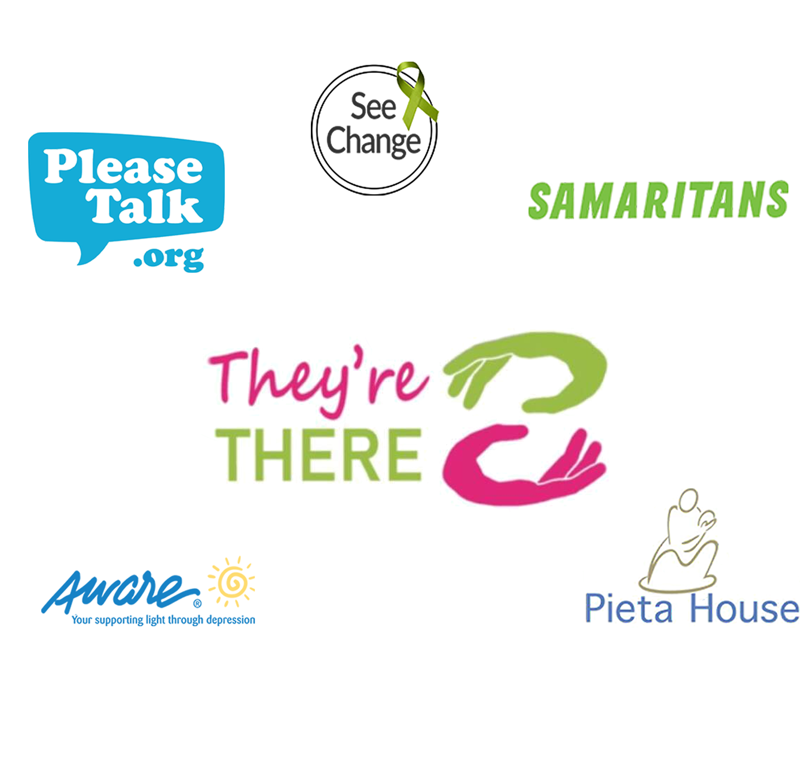

Dear friends,
We would like to take a moment to talk to you about a rising
problem in our society and especially among young people, our
deteriorating mental health issue.
Ireland has one of the highest percentages of students suffering
from mental health, as I say this every single one of us can bring
to mind someone suffering unnecessarily in darkness.
Within the last year 21% of young adults reported that at some
point, they had engaged in self — harm. This comes to 1 in 5,
meaning If not you, it could be your friend, sibling, partner or
simply just the person sitting next to you, all struggling
unnecessarily.
It is clear to see that too many young people are suffering feeling
silenced and alone, this is something which needs to be and will
be changed.
This is where the "They're there" campaign comes into effect .
This is a campaign ran by students to help students, by promoting
the existing facilities and services which are available to help
when we are struggling with our mental health and wellbeing.
College is a time to be out on your own but to know that you are
never alone, over the next three days you wi I notice that posters
have been put up showing a number of services available to you
whenever you need them. This campaign to highlight these
services will only run for three days but the services 365 days a
year day and night.
We would now like to have a moment of silence to think about all
those we have lost to mental illness. So if everyone could stand
for a moment and we can reflect on all the good memories we
have of those who we've lost.
